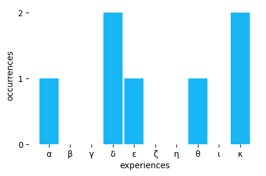
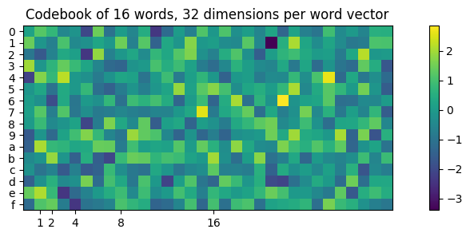
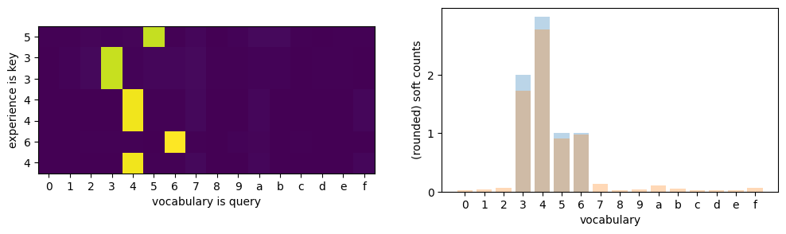
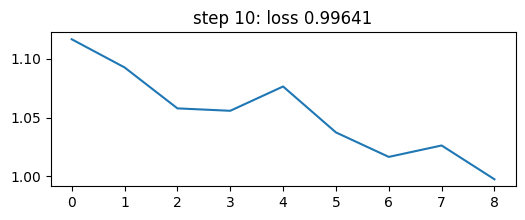
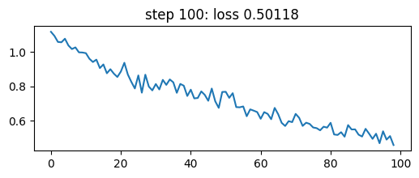
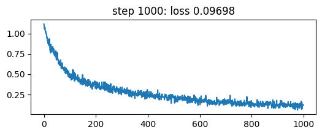
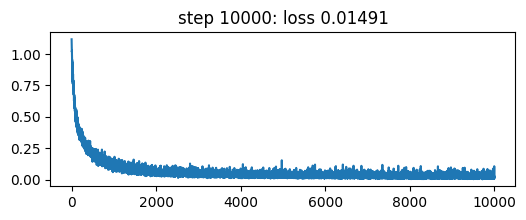

import math
import matplotlib.pyplot as plt
import string
import torch
import torch.nn as nn
import torch.nn.functional as F
torch.manual_seed(0)
torch.set_grad_enabled(False);When performing exploration of environments we’d like to know how many times we’ve been in the current state.
Idea 0: count numbers
Assume all experience is finite and discrete.
In this example, given a buffer x of \(T=7\) experience of kinds 0..10 exclusive, use torch.unique to count occurrences.
T = 7
experience = torch.randint(0, 10, (T,))
experience
unique_experience, counts = torch.unique(experience, return_counts=True)
histo = torch.zeros(10, dtype=torch.long).scatter_(0, unique_experience, counts)
plt.subplots(1, 1, figsize=(5,3))
plt.bar(torch.arange(10), histo, width=0.9, color='#18b6f4')
plt.xticks(range(10), 'αβγδεζηθικ')
plt.xlabel('experiences')
plt.yticks(range(0, max(counts)+1))
plt.ylabel('occurrences')
plt.box(False);
When our experience happens to be infinite and multidimensional, let’s force it to be finite, discrete and one-dimensional.
Idea 1: quantize vectors
Define a fixed codebook with \(V\) experience prototypes. Given a query experience match the closest prototype using inner product or p-norm, then count prototype identifiers.
Below I’m going to show an example of a randomly initialized codebook.
V, D = 16, 32
table = nn.Embedding(V, D)
words = table.weight.detach().numpy()
plt.figure(figsize=(12,3))
plt.imshow(words, interpolation='nearest')
plt.yticks(range(len(words)), string.printable[:len(words)])
plt.xticks([2**i for i in range(5)])
plt.title('Codebook of 16 words, 32 dimensions per word vector')
plt.colorbar()<matplotlib.colorbar.Colorbar at 0x7fb33d216080>
Now given a random experience \(x\) I’m going to use a fast algorithm to compute pairwise L2 norms with the vocabulary. It’s mentioned in Kim, Papamakarios and Mnih, 2020 and this CSCS tutorial on HPC for Python.
x = torch.randn(T, D) # experience
y = table.weight.data # discrete prototypes
l2_norm_similarity_slow = torch.norm(x[:, None, :] - y[None, :, :], p=2, dim=-1) # (T, V)
l2_norm_similarity_fast = ((x*x).sum(dim=-1)[:,None] - 2*(x @ y.T) + (y*y).sum(dim=-1)[None, :]).abs().sqrt() # (T,V)
torch.allclose(l2_norm_similarity_slow, l2_norm_similarity_fast)TrueNow argmin gives us our hard assignment to codebook ids:
l2_norm_similarity_fast.argmin(dim=-1)tensor([ 4, 10, 6, 7, 15, 8, 8])“Good” prototype vectors can be estimated from data using algorithms like LBG, Lloyd’s (aka k-means), CBOW in Mikolov et al, 2013, next word prediction, etc.
However, sometimes random codebooks are enough.
In reinforcement learning, random projections of observations are used in a variant of artificial curiosity. An agent is rewarded proportional to the prediction error of a random projection of the state in Burda et al, 2018.
Consistency objective of random targets is used to bootstrap self-supervised representations in Tarvainen & Valpola, 2017. Random projection quantization is used for large scale self-supervised learning in speech recognition in Chiu et al, 2022 to make learning targets.
Hard assignment, however, is not differentiable. To backpropagate through hard assignment you need to use algorithms like REINFORCE. Such estimation gives very noisy gradient estimates: in REINFORCE you only mark assignments that “worked” and ignore negative information.
Idea 2: count softly
Matching can be done against noisy versions of vector observations. Example below uses dot product attention to match and count.
Alternatively 2-norm can be used instead of the dot product. L2 attention has bounded gradient, as shown in Kim, Papamakarios and Mnih, 2020. This fact can be useful later.
keys = table(experience) # keys is the experience sequence of length T
query = table(torch.arange(len(words))) # keys are the whole vocabulary V
att = (keys @ query.T) / math.sqrt(D) # (T, V)
att = att.softmax(dim=-1)
soft_counts = att.sum(dim=0)
fig, (axl,axr) = plt.subplots(1, 2, figsize=(12, 3))
axl.imshow(att)
axl.set_yticks(ticks=range(len(experience)), labels=experience.tolist());
axl.set_xticks(ticks=range(len(query)), labels=string.printable[:len(query)]);
axl.set_ylabel('experience is key')
axl.set_xlabel('vocabulary is query')
axr.bar(range(len(query)), soft_counts.round().tolist(), alpha=0.3)
axr.bar(range(len(query)), soft_counts.tolist(), alpha=0.3)
axr.set_xticks(ticks=range(len(query)), labels=string.printable[:len(query)]);
axr.set_yticks(ticks=range(3));
axr.set_ylabel('(rounded) soft counts')
axr.set_xlabel('vocabulary');
Attention requires us to store all experience in memory, and to compute the attention weights for all experience in memory. This is a quadratic cost in the number of experience. This is not scalable. We need to find a way to approximate the attention weights.
Idea 3: running counts
We perform counting recurrently, updating a hidden state of word counts. This downgrades complexity of updates from quadratic to linear.
Once observations are discrete (e.g. turned discrete through elaborate quantization), this can be implemented with cumsum.
B, T, V = 2, 7, 4
observations = torch.randint(0, V, (B, T)).view(-1)
one_hot_observations = F.one_hot(observations).view(B,T,V)
running_counts = one_hot_observations.cumsum(dim=-2)
running_countstensor([[[0, 1, 0, 0],
[0, 2, 0, 0],
[0, 3, 0, 0],
[1, 3, 0, 0],
[1, 3, 1, 0],
[1, 3, 2, 0],
[2, 3, 2, 0]],
[[0, 0, 1, 0],
[0, 0, 1, 1],
[0, 0, 1, 2],
[1, 0, 1, 2],
[1, 0, 1, 3],
[2, 0, 1, 3],
[2, 1, 1, 3]]])Idea 4: abstract over embedding tables
Different environments provide different possible “vocabularies” of experience. All vocabularies are sampled from \(\mathcal{N}(0,I)\). Let’s train a recurrent network to predict how many times it has seen a given input plus one.
# spot init.normal_
nn.Embedding.reset_parameters??Signature: nn.Embedding.reset_parameters(self) -> None
Docstring: <no docstring>
Source:
def reset_parameters(self) -> None:
init.normal_(self.weight)
self._fill_padding_idx_with_zero()
File: ~/curiosity/.venv/lib/python3.10/site-packages/torch/nn/modules/sparse.py
Type: functiondef make_batch():
"""
Generate random observation sequences and a class index
that tells if we've seen the observation once (class 0), twice (class 1) or many times (class 2) before.
Returns:
inputs (torch.Tensor): A tensor of shape (B, T, D) containing the embeddings
of the observation sequences, where B is the batch size, T is the sequence length,
and D is the embedding dimension.
targets (torch.Tensor): A tensor of shape (B, T) containing the class index,
where B is the batch size and T is the sequence length.
"""
B, T, D, Vlocal = 32, 7, 32, 4
Vglobal = B*Vlocal
local_word_ids = torch.randint(0, 4, (B, T,))
table = nn.Embedding(Vglobal, D)
global_word_ids = torch.arange(B)[:, None]*4 + local_word_ids
inputs = table(global_word_ids)
current_input = F.one_hot(local_word_ids.view(-1), num_classes=Vlocal).view(B, T, Vlocal)
counts = current_input.cumsum(dim=1)
# how many times have we seen the current input so far? one, two or many
targets = (counts * current_input).clamp(0, 3)
targets = targets.sum(-1) - 1
return inputs, targetsI’ll be using LSTM that has an inductive bias towards counting thanks to its forget gates. This has been mentioned in Deletang et al, 2023 putting LSTM in context with other architectures.
class Counter(nn.Module):
def __init__(self, dim=32, hidden=512):
super().__init__()
self.readin = nn.Linear(dim, hidden)
self.rnn = nn.LSTM(hidden, hidden, batch_first=True)
self.readout = nn.Linear(hidden, 3) # one, two or many times
def forward(self, x):
x = self.readin(x)
x, _ = self.rnn(x)
x = self.readout(x)
return x
torch.set_grad_enabled(True)
device = 'cuda:1'
counter = Counter().to(device)
optimizer = torch.optim.Adam(counter.parameters(), lr=1e-3)
N = 10000
losses = torch.zeros(N)
for step in range(1,N+1):
inputs, targets = make_batch()
inputs, targets = inputs.to(device), targets.to(device)
logits = counter(inputs)
loss = F.cross_entropy(logits.view(-1, 3), targets.view(-1))
optimizer.zero_grad()
loss.backward()
optimizer.step()
losses[step-1] = loss.item()
if step > 1 and math.log10(step) % 1 == 0:
plt.figure(figsize=(6,2))
plt.plot(losses[:step-1].numpy())
plt.title(f'step {step}: loss {loss:.5f}')
plt.show()



Now, let’s test the counter.
inputs, targets = make_batch()
counter(inputs[0, :].to(device)).argmax(dim=-1), targets[0, :].to(device)(tensor([0, 1, 0, 2, 1, 2, 0], device='cuda:1'),
tensor([0, 1, 0, 2, 1, 2, 0], device='cuda:1'))This almost gives us a generic counter of experience taken from a standard 32-dimensional normal distribution.
How to predict actual counts? One way is to perform regression to numeric targets.
In classification land we can take a softmax, however there is no inductive bias in the softmax towards relationships between output classes, which is why I took classes one, two and many to demonstrate the concept to begin with.
A way to add such bias is to use windowed label smoothing around the target (a trick from somewhere on kaggle, I’ll need to find a link to it). Another way is to use mixture of logistics from Salimans et al, 2017.